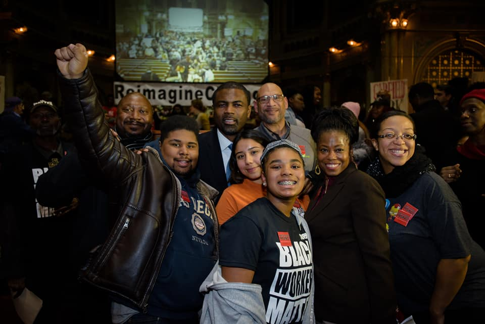

OUR MISSION & VISION

Our Vision
We work to build a just, livable and vibrant Greater West Side where every resident has the opportunity to thrive and contribute to our collective future.
Our Mission
To engage and unite a network of local residents and organizations through training and capacity-building to leverage our collective power and shape our communities.